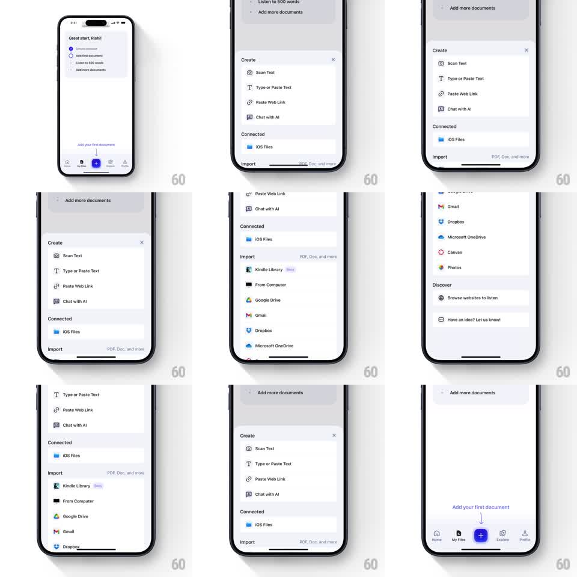

Media
Frame-by-frame

Rebuild this interaction 1:1: Speechify's add-document sheet - tapping the tab bar's blue + slides up a "Create" sheet (Scan Text, Type or Paste Text, Paste Web Link, Chat with AI) that expands into Connected and Import sections (iOS Files, Kindle Library, Google Drive, Gmail, Dropbox, ...) and dismisses back down.

Rebuild this interaction 1:1: Speechify's add-document sheet - tapping the tab bar's blue + slides up a "Create" sheet (Scan Text, Type or Paste Text, Paste Web Link, Chat with AI) that expands into Connected and Import sections (iOS Files, Kindle Library, Google Drive, Gmail, Dropbox, ...) and dismisses back down.
## Integration
Integration: stack-agnostic spec - springs given as stiffness/damping, timed motions as duration + curve; map every value to your framework and animation library of choice.
## Scene
Library screen ("Great start, Rishi!" checklist) with tab bar, center blue + button. Sheet: "Create" header with X, four create rows with icons, "Connected" section (iOS Files), "Import" section (Kindle Library NEW, From Computer, Google Drive, Gmail, Dropbox, Microsoft OneDrive, Canvas, Photos) with "PDF, Doc, and more" hint, "Discover" section (Browse websites, feedback row).
## Motion spec
Pattern: bottom sheet rise + progressive expansion + slide-down dismiss.
- Tap +: sheet slides up to half height (spring ~320/28, ~300ms), background dims 40%.
- The sheet's sections are already laid out - scrolling inside expands it to full height with a springy detent snap (~250ms); the tab bar hides as the sheet passes it.
- Section rows stagger in on first open (30ms, fade + 8px rise).
- Dismiss (X, swipe down, or backdrop): sheet slides down with drag 1:1 tracking, velocity-aware; slow drags under half spring back up.
- The + button rotates to X (or morphs) while the sheet is open, 200ms.
## Calibration
- Detents (half, full) are true stops - the sheet never rests between them.
- Dismiss is gesture-driven: fast fling closes from any position.
## Reduced motion
Sheet fades/slides without spring; sections appear as a block.
## Don't miss
- Import rows carry real service icons (Gmail, Drive, Dropbox, OneDrive, Canvas, Photos) - it's a branded list.
- "PDF, Doc, and more" hint sits at the Import section's right edge.